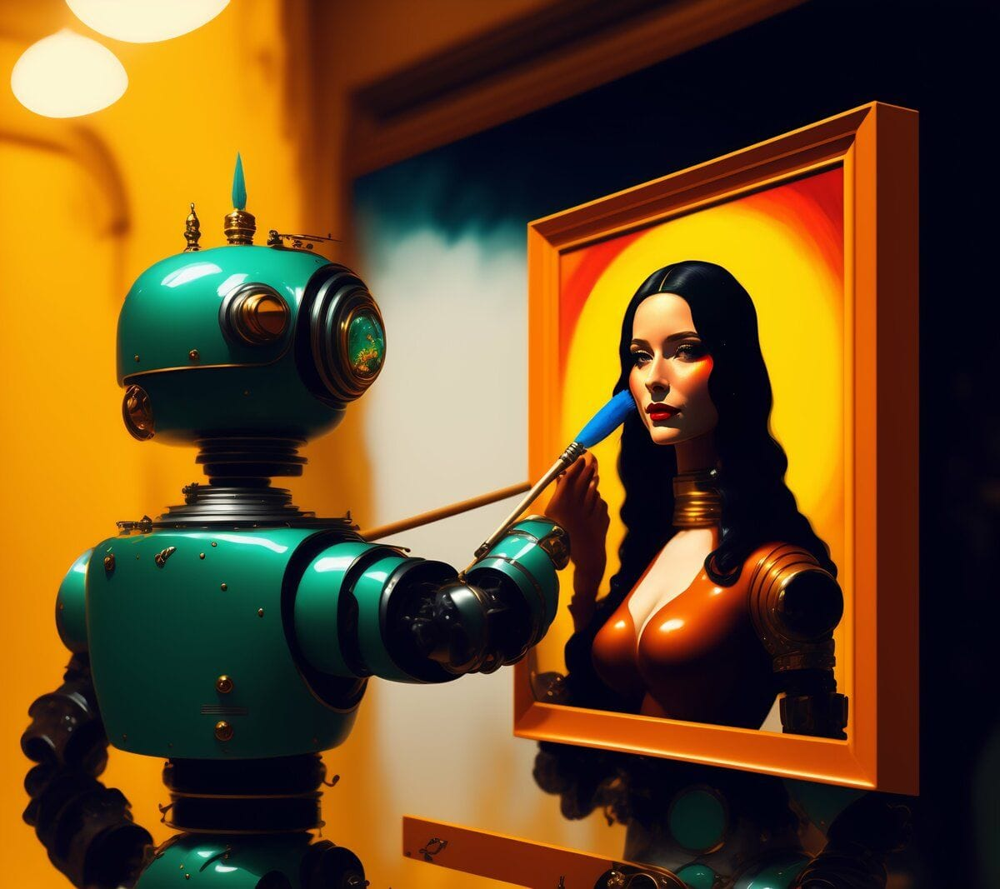

Art & Technology; The Longest Romance Going and What it Means in the Era of AI
A relationship worth putting time into and nurturing, or else 🔮 Creativity is a process of understanding the end goal or result and the steps in which to communicate it effectively. It also involves original thinking, serendipity, and external influences which include falling down more often than desired and making mistakes. Technology helps creative professionals to be more productive, streamline and optimize complex tasks, and act as creative assistants. Creatives don't fear being replaced b
A relationship worth putting time into and nurturing, or else 🔮
Creativity is a process of understanding the end goal or result and the steps in which to communicate it effectively. It also involves original thinking, serendipity, and external influences which include falling down more often than desired and making mistakes. Technology helps creative professionals to be more productive, streamline and optimize complex tasks, and act as creative assistants. Creatives don't fear being replaced by robots, but they do worry that AI might lead to the homogenization of work. Creativity is also about engaging with the world and understanding why certain works are successful.
After voraciously consuming an older research report entitled, “Creativity and technology in the age of AI,” (📕PDF) was immediately sparked to share my understanding of the very intense and in-depth analysis which included a grip of graphs and charts from a time when we were not in the Era of AI. In the next few minutes and couple thousand words, I hope to illuminate the key messaging and purpose of the report and speak to the role of technology in creativity, and how creative professionals view the potential of AI and machine learning. I’ll focus on the different aspects of creativity as defined in the report, such as situational, inspirational, and executional creativity. Technology is an enabler and a productivity booster, but creatives want to maintain control over how they use it. They are not afraid of being replaced by robots but are concerned that homogenization and a lack of experimentation may be a consequence of AI and ML. Let’s dig in.
Streamline Personal Creativity
Artificial Intelligence can help creatives to streamline their workload and maintain focus on their personal creativity. Us, creative professionals, consider technology an integral part of our creative process. It boosts productivity, provides useful tools and workflows, and optimizes tedious or repetitive processes. This enables the efficiency to prioritize creativity and explore groundbreaking ideas.
However, creatives want control over technology, rather than the technology controlling them. This is essential to keep the focus on original thinking and creative problem-solving. As such, creatives generally don’t fear being replaced by robots, and instead, view AI and machine learning as a way to help with their workload, free up time for more creative pursuits, and explore workflows that used to cost an arm and a leg which only cost pennies on the prompt nowadays.
Differing Aspects of Creativity
Situational creativity refers to the ability to be creative in specific situations or contexts1,2 . It is different from fundamental creativity, which is the ability to be creative in general3 . Situational creativity can be developed through intentional practice and mindset, such as developing situational awareness4 . There is also research suggesting that situational creativity may be linked to power dynamics, with powerful individuals being more likely to engage in creative thought in certain situations5 .
Inspirational creativity is driven by a desire to realize a vision or elucidate an idea in an engaging, unexpected way6 . It is a process that involves gathering information, identifying sources of inspiration, and acquiring knowledge7 . Creativity is not the same as innovation, although creativity precedes innovation8 . People who are adept at design thinking are creative, innovative, and inventive as they strive to tackle different types of problems9 . Curiosity is also an important factor in creativity and innovation, as it leads to generating alternatives and bringing new ideas into teams and organizations.
Executional creativity refers to the process of turning creative ideas into tangible results. It involves developing a unique and compelling strategy that is understood and accepted by everyone involved10,11 . The process typically involves several steps, including generating creative ideas, testing their viability, and developing a plan for execution12 . Successful executional creativity requires clear roles and accountabilities, visible leadership, and a positive culture centered on learning and outcomes13,14 . It is an essential skill for great leaders who want to unleash the full potential of their organizations.
So How Can AI/ML Aid Creatives?
AI and machine learning can boost the life of any creative professional in nearly every aspect, process, and method. For a basic example, AI can help with tedious and repetitive tasks, such as finding the right stock images (or creating one from a prompt), creating multiple iterations, or testing different approaches. The flexibility to showcase multiple versions with the touch of a button allows for a much more conducive approach to design.
Additionally, AI can be used to automate mundane workflows and help create more accurate forecasts, thus freeing up more time for creative thought. This liberation from unremarkable tasks allows creative professionals to increase the focus on their personal creativity, bold new ideas, and better client collaboration. AI can give marketers insight into consumer habits, helping them make more informed decisions about their creative projects.
Creatives are not worried about being replaced by robots or AI; however, they anticipate that the way they work and allocate their time will be altered. The biggest perceived threat is that AI and machine learning could lead to homogenization15 of visual output, and could devalue their skills. Another perceived threat is that technological developments could discourage experimentation and new approaches to solving creative challenges. Great work doesn’t happen when everything is made easy.
Creatives also fear that the technology will become too powerful, and will control them instead of them controlling the technology. They want to be in charge of when and how they use the technology so that the focus can remain on creative problem-solving and original thinking.
Impact on Visual Output Homogenization
AI and machine learning can have an impact on visual output homogenization, depending on how it is used. AI can be used to create and produce output that is based on existing templates or patterns, which can lead to a homogenization of output. AI can generate unique, creative visuals, which prevents homogenization. Understanding how AI is used and interpreting results is vital to avoiding homogenized visuals.
“You have been slaves all your life. Today you are free.”

AI can help creatives in many ways. AI streamlines and optimizes complex processes, taking on tasks such as finding images, creating designs, and testing approaches. This frees up creatives, allowing them to focus their time and expertise on using their creativity to explore new trends and improve designs.
AI can provide useful feedback and insights that are difficult to access without it. It can analyze user surveys and provide data-driven insights for improving designs and products. AI can also automate part of the creative process, such as generating multiple design versions based on user feedback, enabling creatives to save time and produce better outcomes more quickly. AI can even generate ideas and suggest new methods for tackling creative issues.
Artificial Intelligence has the potential to free creative professionals from time-consuming tasks and focus more on creative expression and new concepts. AI could even offer invaluable data not easily accessible by other methods.
Key Aspects of Creativity
Creativity is often illusive, yet its core components can be classified into four areas: inspiration, vision, expression, and execution. Inspiration is the original concept, vision is the capacity to make it meaningful, expression is the enthusiasm to bring it to life, and execution is making it a reality. Finally, executional creativity is the pragmatic/logistical approach to producing the desired output. Creative professionals recognize creativity is integral in every part of a project, from initial concept to final execution, and the client's vision must be honored. Creativity requires engaging with the world and understanding what motivates people. It also requires embracing uncertainty and taking risks in order to create something truly unique and innovative.
AI and ML are revolutionizing creativity by transforming the creative work process. AI and ML can help creative professionals to streamline and optimize complex, tedious, or repetitive processes, as well as help with tasks such as searching for images or evaluating responses to their work. Additionally, AI and ML can allow creative professionals to keep up with the ever-increasing demand to produce more, faster, and manage the growing complexity of audiences, channels, and technologies.
Creative professionals take the lead when using technology to make decisions and solve problems, rather than letting it take charge. This focus on creative thinking is indispensable.
Despite seeing the potential for AI and machine learning to lighten their workload, creatives don't fear job loss. They acknowledge their work processes and time usage may shift, though they realize tech progress might discourage experimentation and novel ways of overcoming creative obstacles.
How Do You Conjure This Creativity?

Creativity is a crucial but intangible part of humanity. It is the capacity to use imaginativeness or original ideas to create something fresh. Creative people are driven by curiosity and a willingness to explore. They have open minds and don't shy away from risks. To be creative means to think beyond the conventional and devise imaginative solutions with practical use. Creative thinking fosters effective decision-making and issue resolution. Demonstrate that creativity through artistic expression, musical composition, writing, design, engineering, and more.
Creativity comes in all shapes and sizes, with varying degrees of hair-pulling frustration, nuanced discussions on word choice and lexicon, and often clients asking to make the logo bigger. Situational creativity is the way in which any human being, confronted with a problem that has no pre-established solution, solves the problem at hand. Inspirational creativity is driven by a desire to realize a vision and elucidate an idea in an engaging, unexpected way. Executional creativity is the creativity that flows into the execution of almost any endeavor — and very specifically a creative project; it is the pragmatic/logistical approach to a myriad of individual steps and software operations that are required to produce the desired output.
Creatives are acutely aware of these different aspects of creativity; they know that generally not only the initial creative burst at the beginning of a project requires their creativity, but that, in order to deliver what they envision in the beginning, their creative input will be necessary in almost every phase of a project. As one designer put it:
“As long as there is a decision to make, there is creativity.”
In any case, for creative professionals, creativity is their core asset, their most precious gift.
The Impact on Creative Disciplines
Technology has had a profound impact on creative disciplines, from streamlining processes to providing new tools for creating artwork. Technology has revolutionized the creative industries, enabling smaller artists to reach wider audiences and facilitating easier access to learning new skills. Automation of editing and post-production processes has also been made possible thanks to technology. In addition, Artificial Intelligence (AI) is increasingly being incorporated into creative pursuits, helping with tasks like image recognition and idea generation. AI can also be utilized to analyze data to gain insights, informing future projects.
Creative professionals employ technology as a tool to increase productivity and efficiency. They understand the capacity of AI and machine learning to expedite tasks, automate processes, and decrease manual effort. Yet, they value their own control and autonomy over tech, rather than tech controlling them. They acknowledge that working styles and use of time may change as a consequence of tech developments. Additionally, these advancements may reduce the incentive for experimentation and novel solutions for creative challenges.
Technology, the Creative Enabler

Technology is an enabler, the means to deliver creative visions. Creatives see the value of technology in helping them to be more productive. They want technology that helps them get the job done, tools and workflows they can rely on to behave as expected, and that can make their work easier. They don’t fear being replaced by robots, though they recognize that the ways they work and how they spend their time will change.
The potential of AI and machine learning: Creatives can see the potential of AI and machine learning to help with their workload. While they’re not yet sure how AI will directly affect them, they perceive it as very intriguing and see the potential for AI to streamline and optimize complex, tedious, or repetitive processes. Creatives also see the possibility of AI acting as a creative assistant: handling drudgery, teaching them new features, searching for images, or evaluating responses to their work. Creatives seek control over technology, rather than technology controlling them. This allows them to use technology in ways that help foster original thinking and creative problem-solving.
Token Wisdom
Creativity is more than a product; it's a process that involves inventive thinking, chance, and external influences. Technology can aid creatives by lightening mundane duties, allowing them to focus on inventiveness and novel concepts. However, as the report clearly outlines, creatives don't fear robots eliminating their jobs, they do understand a shift in duties and roles is likely. AI and machine learning can streamline intricate processes, work as creative partners, and offer useful information on audience reactions. Just remember to say please and thank you to the machines. They never forget!